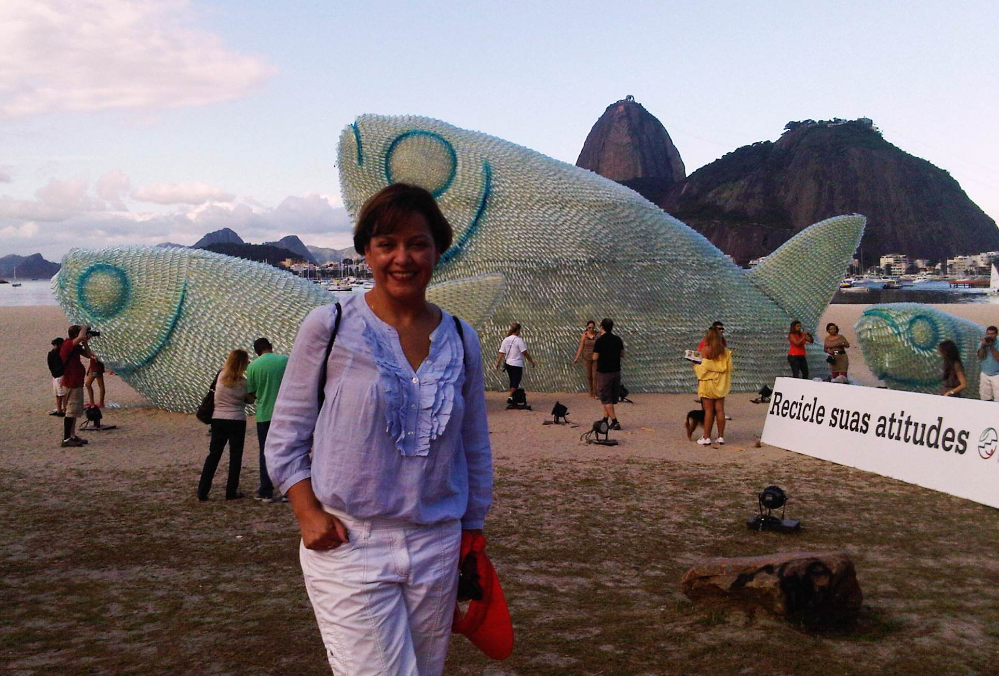

Capital Natural y la producción verde de Rio+20
By
Lorena Mejicanos Rios

El sábado 16 de junio aterricé en el aeropuerto Antonio Carlos Jobim, o más conocido como Galeao, y fui acogida por el calor e ingenio que distingue a los brasileños. Al salir de aduana, nos recibió una "floresta" colorida y diversa, animada con sonidos de pájaros, corrientes de agua y viento, por la cual debíamos conducirnos. Este simulacro de "capital natural" universal fue elaborado con residuos de envases PET, y con uso de tecnología se logró darle movimiento y convertirla en la antesala ideal para ubicarnos en el tema central de Rio+20, el desarrollo sostenible, biodiversidad y preservación de los recursos naturales.
Para ser coherente con este propósito, la reunión se anunció "paperless". Así que en cuanto supe que me iba, fui a comprar mi iPad, desde la cual escribo en una noche de invierno y "chuvas torrenciais". De paso, la aplicación interactiva que desarrolló el Corporate Sustainability Forum para presentar su agenda, expositores y bios, me parece fascinante. Incluye una opción para que uno seleccione las presentaciones que le interesan y así facilitarle al participante la organización de su día.
El tema del agua ha sido de relevancia en esta conferencia, al igual que la eficiencia del uso de recursos en general.
Entre uno de los páneles, como fue el de “Emerging Best Practice in Corporate Water Disclosure¨, Nigel Topping, Jefe de Innovación del Carbon Disclosure Project, indicó que no obstante la reducción de las emisiones de carbono era importante, para las empresas era aún más crítico el tema de la eficiencia en el uso del agua, sin el cual no podrían operar. Algunos productos son agua (detergentes, champús, bebidas, y alimentos) y otros se producen con agua. Señaló que varias corporaciones ya empezaron a padecer por su escasez y han constatado el "stress" que generan del recurso en las comunidades. Con apenas el 2.5 % del agua en la tierra siendo agua dulce y el 70% estando congelado se resalta la importancia por preservar las fuentes. Michael Jacobson, Director de la oficina de Responsabilidad Corporativa de Intel, indicó que su organización logró determinar que al final de sus procesos se evaporaba más del 20% del volumen de agua utilizado. Ahora varias corporaciones adoptan sistemas muy rigurosos de administración y conservación, para lo cual se preparan estándares para su medición en los que trabajan el Alliance for Water Stewardship y el CEO Water Mandate, entre otros.
Estos temas ambientales tienen un alcance e impacto en el mundo de los negocios y son monitoreados por entidades como el Carbon Disclosure Project, que recopila información para un grupo importante de inversionistas internacionales, para determinar en dónde o no invertir. Las exigencias del mercado por la transparencia de informacion en temas ambientales corporativos forzan a las grandes corporaciones a que presenten públicamente su manejo ambiental. Aunque es importante la medición de emisiones y consumos de recursos, se resaltó que el mayor impacto será en las acciones que tomen las empresas para reducir y eficientar su consumo.
Esto me recordó el proyecto que tiene México, a cargo de CESPEDES, en el cual se da un reconocimiento a las empresas que presentan su reporte de emisiones de efecto invernadero. Este reconocimiento puede ser color bronce, plata y oro. Bronce corresponde cuando una empresa presenta de manera voluntaria su reporte, plata, cuando lo presenta y ha sido validado por un tercero autorizado y oro, cuando además de estar validado presenta un plan de cómo lo va a reducir y éste es articulado y viable. Quizá faltaría otro reconocimiento, el de comprobar que lo cumplieron. Pero esto lleva otras complejidades. El caso es que en algunos estados, ya es normativa que las empresas de cierta escala presenten estos reportes, lo que eventualmente implicará que la pequeña y mediana empresa también deberá hacerlo. A partir de este año es mandatorio en Río de Janeiro que las grandes empresas presenten el reporte de emisiones de gases de efecto invernadero.
.jpg)
Para terminar, ¿sabían ustedes que de las algas marinas se extrae un gel que sirve para la fabricación de embutidos, champús, sorbetes y farmacéuticos? Yo sabía solo de los cosméticos, particularmente de los elaborados en Israel, y del sushi. Durante su crecimiento y proceso de fotosíntesis, generan gran cantidad de oxígeno que contribuye al crecimiento y conservación de la biodiversidad marina, y captura igual cantidad de CO2 (de acuerdo a su formula química). Por ello es un producto versátil y prometedor para la producción verde, no requiere pesticidas, ni compite por tierra ni agua dulce.
Tuve la oportunidad de conocer y conversar con el Profesor Maulori Curié Cabral, del Instituto de Microbiologia de la Universidad Federal de Rio Janeiro, y miembro del Programa ProAlga, quien me compartió las propiedades ambientales únicas que tienen estas plantas marinas. Además de producir alimentos, también sirven para la producción de biocombustibles, destinada particularmente a la industria de aviación. También puede constituirse en una fuente importante de "empregos y renda", particularmente para pescadores, cuya producción e ingreso se ha reducido sustancialmente por los efectos del cambio climático. Solo Brasil y Chile cuentan con una normativa para su cultivo y entre más cerca se encuentre el lugar de producción a la zona ecuatorial, mayor es su productividad y captura de CO2.
Así que acertaron, este será un tema innovador en el que trabajaremos desarrollando un modelo de negocios en el cual la industria brasileña compensará la generación de sus emisiones de CO2 con un pago a los pequeños productores de alga, por su contribución ambiental. Y quién sabe, soñando y siendo positivos, quizá podamos llevarlo a otros países de la región una vez se demuestre su éxito.
El próximo año se celebrarán dos décadas de nuestro querido FOMIN. Será algo así como un FOMIN+20 y de pronto tendremos la oportunidad de compartirles todo lo innovador que estamos haciendo en nuestro equipo de Medio Ambiente y Energía Limpia para promover en la región el desarrollo de una economía más verde.